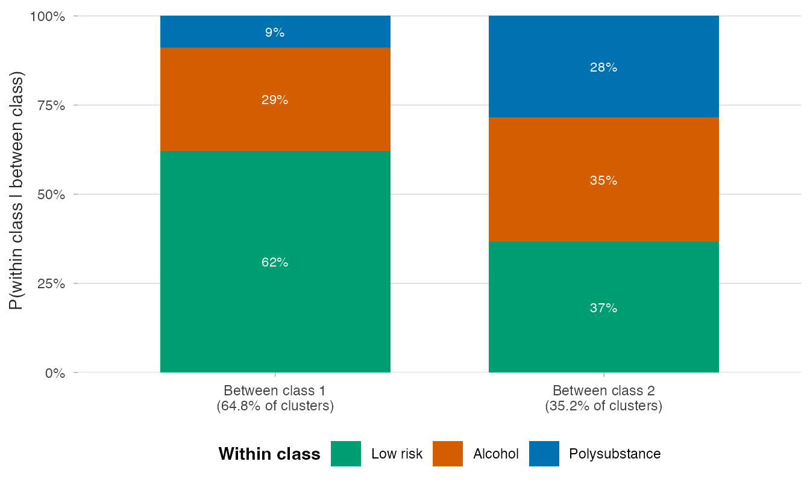

Two-level latent class and profile models
multilevel.RmdWhy a two-level model
Students in the same school share a context. If schools differ in how
common each kind of student is, an ordinary latent class analysis treats
this between-school variation as noise, and its standard errors assume
independent students. The nonparametric multilevel latent class model
(Vermunt 2003; Mplus TYPE = TWOLEVEL MIXTURE with a
between-level latent class variable) adds a second, cluster-level latent
class variable: every school belongs to one of KB latent
school types (CB), and the distribution of the
K student classes (CW) depends on the school
type, P(CW | CB). The measurement model (what each student
class looks like) is the same in every school type.
schools contains six past-30-day risk behaviours of
3,624 students in 150 schools (simulated with two school types and three
student classes; see ?schools).
#>
#> (0,10] (10,20] (20,30] (30,40]
#> 12 45 45 48Fitting the model
level2 names the cluster and KB the number
of school types:
m <- lca(schools, starts_with("b_"), K = 3, level2 = school, KB = 2)#> Starting Julia ...
m#> ━━ Two-level latent class analysis ━━━━━━━━━━━━━━━━━━━━━━━━━━━━━━━━━━━━━━━━━━━━━
#> 3 within classes (CW), 2 between classes (CB); n = 3624 in 150 clusters
#> Random starts: 100 / 20; best LL replicated 20 times
#>
#> ── Fit ─────────────────────────────────────────────────────────────────────────
#> Log-likelihood -8886.583 AIC 17819.166
#> Free parameters 23 BIC 17961.658
#> Observations 3624 BIC (n = clusters) 17888.410
#> Clusters 150 Sample-size adj. BIC 17888.576
#> Best LL replicated 20 / 20 Entropy 0.649
#>
#> ── Within (individual-level) classes, CW ───────────────────────────────────────
#> Class Proportion Modal n
#> ──────────────────────────
#> 1 0.534 2026
#> 2 0.311 1090
#> 3 0.155 508
#>
#> ── Between (cluster-level) classes, CB ─────────────────────────────────────────
#> Class Probability
#> ──────────────────
#> 1 0.648
#> 2 0.352
#>
#> ── P(CW | CB): within-class distribution in each between class ─────────────────
#> CB 1 CB 2
#> ──────────────────
#> CW 1 0.621 0.366
#> CW 2 0.291 0.350
#> CW 3 0.088 0.284
#>
#> ── Item-response probabilities ─────────────────────────────────────────────────
#> Item = category Class 1 Class 2 Class 3
#> ──────────────────────────────────────────
#> b_alcohol = 0 0.933 0.444 0.090
#> b_alcohol = 1 0.067 0.556 0.910
#> b_binge = 0 0.993 0.687 0.253
#> b_binge = 1 0.007 0.313 0.747
#> b_smoke = 0 0.969 0.894 0.427
#> b_smoke = 1 0.031 0.106 0.573
#> b_vape = 0 0.938 0.637 0.220
#> b_vape = 1 0.062 0.363 0.780
#> b_cannabis = 0 0.982 0.887 0.360
#> b_cannabis = 1 0.018 0.113 0.640
#> b_fight = 0 0.946 0.920 0.634
#> b_fight = 1 0.054 0.080 0.366
#>
#> summary() for standard errors · lm_table() to export · classify() for posteriorsThe output adds the cluster count, a BIC with the number of clusters
as the sample size, the probabilities of the school types and the table
P(CW | CB). Here the second school type has three times the
share of polysubstance users and fewer low-risk students:
round(conditionalprobs(m), 3)#> CB1 CB2
#> CW1 0.621 0.366
#> CW2 0.291 0.350
#> CW3 0.088 0.284
classprobs(m, level = "between")#> [1] 0.6475306 0.3524694
Standard errors are robust with schools as the independent units. The
latent class model is reported in the Mplus parameterisation (between
logits [CB#m], within intercepts [CW#k] and
the slopes CW#k ON CB#m):
coeftable(m)#> kind class between item level estimate se
#> 1 between logit 0 1 CB#1 vs CB#2 0.6082021 0.2762250
#> 2 within intercept 1 0 CW#1 vs CW#3 0.2517880 0.2307802
#> 3 within intercept 2 0 CW#2 vs CW#3 0.2081086 0.1560548
#> 4 within slope 1 1 CW#1 ON CB#1 vs CW#3, CB#2 1.7018692 0.1345898
#> 5 within slope 2 1 CW#2 ON CB#1 vs CW#3, CB#2 0.9877904 0.1918734
#> z p oddsratio
#> 1 2.201836 2.767690e-02 1.837125
#> 2 1.091030 2.752599e-01 1.286323
#> 3 1.333561 1.823479e-01 1.231347
#> 4 12.644857 1.194422e-36 5.484189
#> 5 5.148137 2.630862e-07 2.685294Choosing K and KB
Lukočienė, Varriale and Vermunt (2010) recommend choosing the number
of within classes with the usual BIC first (with KB = 1,
which is the single-level model) and then the number of between classes
with the BIC that uses the number of clusters:
fits <- list(lca(schools, starts_with("b_"), K = 3, level2 = school, KB = 1),
m,
lca(schools, starts_with("b_"), K = 3, level2 = school, KB = 3))
lm_table(fits, labels = c("KB = 1", "KB = 2", "KB = 3"))Model fit ────────────────────────────────────────────────────────────────────────────────────────────────────── Model K KB Par. LL AIC BIC BIC (clusters) saBIC Entropy Smallest (%) ────────────────────────────────────────────────────────────────────────────────────────────────────── KB = 1 3 1 20 -8941.016 17922.031 18045.938 17982.244 17982.388 0.607 — KB = 2 3 2 23 -8886.583 17819.166 17961.658 17888.410 17888.576 0.649 — KB = 3 3 3 26 -8885.250 17822.500 17983.579 17900.777 17900.964 0.585 — ────────────────────────────────────────────────────────────────────────────────────────────────────── LL = log-likelihood; Par. = free parameters; saBIC = sample-size adjusted BIC; Smallest = smallest class (estimated proportion). KB = between-level (cluster) classes; BIC uses n = individuals, BIC (clusters) n = clusters.
Classifying students and schools
classify() returns one row per student (aligned with the
data) or, with level = "between", one row per school:
#> row p1 p2 p3 class
#> 1 1 0.21638224 0.65975657 1.238612e-01 2
#> 2 2 0.73105380 0.26085092 8.095288e-03 1
#> 3 3 0.39643567 0.59825547 5.308865e-03 2
#> 4 4 0.01281906 0.61520698 3.719740e-01 2
#> 5 5 0.91992778 0.07998176 9.045282e-05 1
#> 6 6 0.91992778 0.07998176 9.045282e-05 1#> cluster p1 p2 class
#> 1 1 0.97467201 0.0253279914 1
#> 2 2 0.98811941 0.0118805934 1
#> 3 3 0.63975018 0.3602498164 1
#> 4 4 0.34753774 0.6524622591 2
#> 5 5 0.99913506 0.0008649446 1
#> 6 6 0.08273325 0.9172667536 2Covariates
Within covariates predict the student class (cw ON x;
the intercepts depend on the school type, the slopes are common), and
school-level covariates predict the school type (cb ON z).
They can be estimated together with the measurement model (one
step):
lca(data, items, K = 3, level2 = school, KB = 2, covariates = x, between_covariates = z)or, keeping the classes defined by the indicators alone, by the two-step estimator of Di Mari, Bakk, Oser and Kuha (2023), with standard errors corrected for step 1, or the bias-adjusted three-step estimator of Lyrvall, Bakk, Oser and Di Mari (2024):
set.seed(1)
schools$female <- rbinom(nrow(schools), 1, 0.5) # illustrative covariate (unrelated by construction)
ts <- twostep(m, schools, covariates = female)
coeftable(ts)[coeftable(ts)$kind == "within covariate", ]#> kind class between item level estimate se
#> 6 within covariate 1 0 female CW#1 ON -0.08540736 0.1172668
#> 7 within covariate 2 0 female CW#2 ON -0.15661822 0.1412056
#> z p oddsratio
#> 6 -0.7283166 0.4664198 0.9181382
#> 7 -1.1091505 0.2673652 0.8550304
r3 <- r3step(m, schools, covariates = female)bch(m, data, y) gives BCH means of a continuous
student-level outcome by student class, with cluster-robust standard
errors.
Continuous indicators
lpa() takes the same arguments; within-class variances
can be equal or class-specific:
p <- lpa(schools, starts_with("w_"), K = 3, level2 = school, KB = 2, variances = "varying")
profilemeans(p)#> class1 class2 class3
#> w_sleep 7.947205 7.733464 6.603888
#> w_stress 4.677685 6.963295 9.777970
#> w_belong 3.634136 3.298636 2.643348
round(conditionalprobs(p), 3)#> CB1 CB2
#> CW1 0.618 0.304
#> CW2 0.280 0.398
#> CW3 0.102 0.298Random class intercepts instead of school types
The parametric alternative (Vermunt 2003; Mplus User’s Guide example
10.6) replaces the discrete school types by a continuous school effect:
the log-odds of every student class against the last get a random
intercept, and the intercepts load on one normal school factor. Within
covariates (c ON x) and school-level covariates of the
factor (f ON w) can be added. The likelihood is integrated
by adaptive Gauss–Hermite quadrature:
ri <- lca(schools, starts_with("b_"), K = 3, level2 = school, random = "factor")
ri#> ━━ Two-level latent class analysis with random class intercepts ━━━━━━━━━━━━━━━━
#> 3 classes; n = 3624 in 150 clusters
#> Integration: 15 Gauss–Hermite points (adaptive)
#> Random starts: 100 / 20; best LL replicated 20 times
#>
#> ── Fit ─────────────────────────────────────────────────────────────────────────
#> Log-likelihood -8888.575 AIC 17821.151
#> Free parameters 22 BIC 17957.448
#> Observations 3624 BIC (n = clusters) 17887.385
#> Clusters 150 Sample-size adj. BIC 17887.543
#> Best LL replicated 20 / 20 Entropy 0.614
#>
#> ── Class sizes ─────────────────────────────────────────────────────────────────
#> Class Proportion Modal n
#> ──────────────────────────
#> 1 0.546 2055
#> 2 0.300 1054
#> 3 0.154 515
#>
#> ── Class model (logits vs. class 3; random intercepts load on factor F) ────────
#> Parameter Estimate SE p
#> ─────────────────────────────────────
#> class intercept
#> vs C#3 C#1 1.421 0.210 <0.001
#> vs C#3 C#2 0.851 0.149 <0.001
#> loading
#> F BY C#1 1.000 0.000 —
#> F BY C#2 0.586 0.108 <0.001
#> factor variance
#> residual F 0.812 0.144 <0.001
#>
#> ── Item-response probabilities ─────────────────────────────────────────────────
#> Item = category Class 1 Class 2 Class 3
#> ──────────────────────────────────────────
#> b_alcohol = 0 0.928 0.432 0.090
#> b_alcohol = 1 0.072 0.568 0.910
#> b_binge = 0 0.991 0.676 0.254
#> b_binge = 1 0.009 0.324 0.746
#> b_smoke = 0 0.968 0.892 0.425
#> b_smoke = 1 0.032 0.108 0.575
#> b_vape = 0 0.934 0.631 0.218
#> b_vape = 1 0.066 0.369 0.782
#> b_cannabis = 0 0.982 0.883 0.358
#> b_cannabis = 1 0.018 0.117 0.642
#> b_fight = 0 0.946 0.918 0.634
#> b_fight = 1 0.054 0.082 0.366
#>
#> summary() for standard errors · lm_table() to export · classify() for posteriors#> cluster factor_mean factor_sd
#> 1 1 0.1739967 0.2483383
#> 2 2 0.2936315 0.2710984
#> 3 3 -0.0437231 0.2806752
#> 4 4 -0.1561776 0.2006822
#> 5 5 0.4480086 0.2620935
#> 6 6 -0.3553520 0.2612501Compare the two specifications by BIC:
#> nonparametric random_intercept
#> 17961.66 17957.45Agreement with Mplus
The Julia package checks two-level LCA against Mplus User’s Guide
example 10.7 and two simulated data sets (unequal clusters, missing
items), two-level LPA (equal and class-specific variances) against Mplus
on simulated data, and the random-intercept model against example 10.6
and two simulated data sets: the log-likelihood, number of parameters,
BIC, entropy, scaling correction factor, every estimate and every robust
standard error agree to the 3 decimals Mplus prints. (For the
random-intercept model the references are Mplus runs with
INTEGRATION = GAUSSHERMITE and tight convergence; Mplus’s
default rectangular integration is less accurate.)
References
Di Mari, R., Bakk, Z., Oser, J., & Kuha, J. (2023). A two-step estimator for multilevel latent class analysis with covariates. Psychometrika, 88, 1144–1170.
Lukočienė, O., Varriale, R., & Vermunt, J. K. (2010). The simultaneous decision(s) about the number of lower- and higher-level classes in multilevel latent class analysis. Sociological Methodology, 40(1), 247–283.
Lyrvall, J., Bakk, Z., Oser, J., & Di Mari, R. (2024). Bias-adjusted three-step multilevel latent class modeling with covariates. Structural Equation Modeling, 31, 592–603.
Vermunt, J. K. (2003). Multilevel latent class models. Sociological Methodology, 33, 213–239.